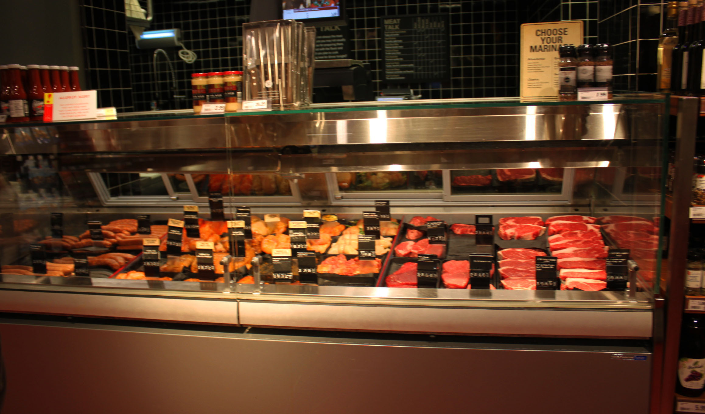
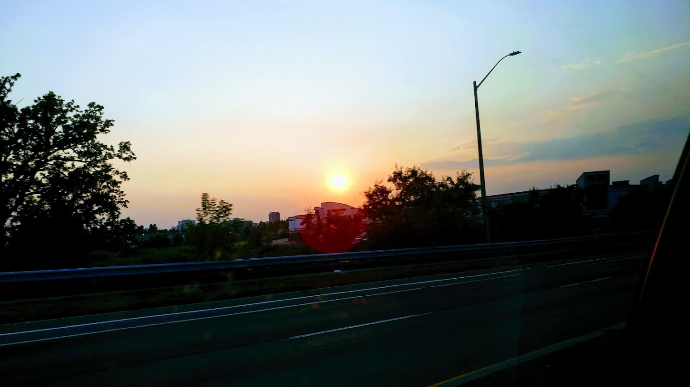

a long-term change in the earth's climate due to an increase in atmospheric temperature

Food
Over the last 50 year, meat production has increased over 3 fold to over 330 million tons. This increase has an immense effect on our planet’s food resources and climate change.
One of the most notable changes has been the increase of land resources used. One-third of Earth’s arable land is being used grow feed our meat. This land used to grow meat could theoretically feed another 3.5 billion people instead, while the meat produced by this land only feeds the wealthiest countries each day.
Another notable change is the increase in carbon emissions. Livestock is responsible for about 18% of greenhouse gases released world-wide. This increase in greenhouse gases will contribute to the greenhouse effect thus hastening the advancement of climate change.

On the Road
Transportation and commuting has become a large part of our daily lives, and as so, it has also become the largest source of air pollution and greenhouse gas emissions in Canada.
As of today, transportation accounts for about 25 percent of total carbon emissions and is expected to substantially increase in the future. The greatest contributor in North America is the family car. The average gasoline car releases about 4.6 metric tons of carbon dioxide per year and uses about 391.40 million gallons per day. This then also brings up the issue of the non-renewable resource, gasoline and the increased likely-hood of an oil spill.

Waste
In today’s society, massive amounts of garbage are being created each day and the majority of it is not biodegradable. Much of our waste damages our soil, ground water and surrounding habitat and creates water and air pollution. One of humanity’s oldest and most popular way of approaching our trash is to leave it in a landfill.
Landfills present a number of complications to our planet, with the first and foremost being pollution. They release a substantial amount of methane and carbon dioxide liquids. Some of these liquids which are highly toxic and contaminates and pollutes our land and water ways when it leaks.
Additionally, when a landfill fills up, it is either increased in size or more are built. Both of these options have led to landfills taking up millions of acres across North America and the world. What’s even worse is the fact that when landfill reach their full capacity, they don’t disappear and can take hundreds of year for the waste inside to decompose.